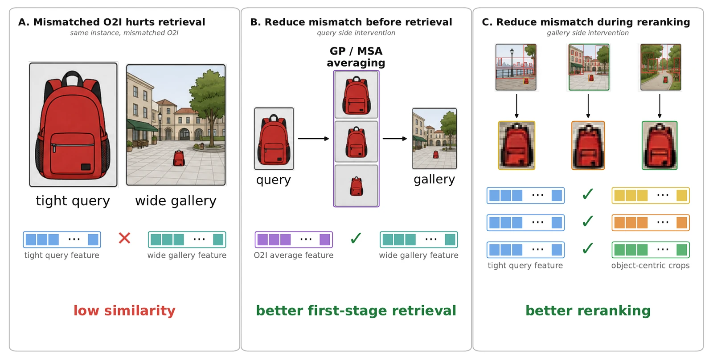
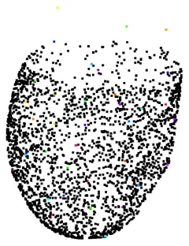

Research
I study when and why visual representations break: how object retrieval degrades with object scale and context, how to evaluate retrieval at web scale at a fraction of the cost, and whether vision-language models use the evidence in front of them.
- State of the art on ILIAS-100M instance retrieval (42.0 mAP@1000) via query-side scale augmentation and OWLv2 crop reranking, with no training and no gallery re-indexing.
- Web-scale retrieval evaluation with 20× less indexing: 100M-image mAP estimated from a 5% sample to within about 0.01.
- Metric VQA: across 12 open VLMs (3B–397B), models lean most on what the object is when judging its size and largely ignore global scene geometry; even the largest trail a text-only frontier LLM on real-world scenes.
I design controlled experiments that vary one factor at a time (object scale, camera distance, visible context, gallery size) and measure its effect across many pretrained vision backbones and open vision-language models. Before the PhD I spent eight years in industry R&D, first as a dynamics and loads engineer and then as a computer vision algorithm developer, and I have worked as a deep learning algorithm researcher on self-supervised methods for computer vision since 2022.
Publications
Computer vision and machine learning
-
WACV 2027accepted
Object-Only Is Not Context-Free: A Counterfactual Diagnostic for Context Removal in Object Retrieval
KAP, the Keyhole Aperture Probe, measures how much an object's embedding depends on its surroundings, by revealing more of the scene around the object while the object region used for pooling stays fixed.
-
arXivOct 2026
Beyond Resolution: Object-to-Image Ratio Mismatch in Instance Retrieval
On 3,021 Objaverse objects rendered at five camera distances, over 80% of the cross-distance retrieval loss comes from object-to-image ratio mismatch rather than resolution, for 9 of 12 pretrained backbones. Query-side scale augmentation lifts ILIAS-100M to 29.2 mAP@1000 and an OWLv2 crop reranker to 42.0, with no training and no change to the gallery index; a LoRA fine-tune matches the query-side gains in a single forward pass.
arXivBibTeX
@article{meivar2026beyond, title = {Beyond Resolution: Object-to-Image Ratio Mismatch in Instance Retrieval}, author = {Meivar, Boaz and Kedem, Ofir and Edenzon, Amit and Chechik, Gal and Avidan, Shai}, journal = {arXiv preprint arXiv:2610.11489}, year = {2026} }
The same object at different object-to-image ratios gives dissimilar features (A). Query-side averaging over object scales, gray-pad (GP) or masked scale augmentation (MSA), fixes first-stage retrieval (B); object-centric gallery crops fix reranking (C). -
arXivOct 2026
Web Scale on a Budget: Tail-Aware Retrieval Evaluation
Full indexing at 100M costs hundreds of GPU-hours and about 200 GB of descriptors per model. The number of distractors that outrank a positive is binomial in gallery size, so a per-query hardness estimated on a small sample predicts the metric at any scale. The estimate converges to full-scale mAP across five backbones on ILIAS and INSTRE at 100M images and on the full 759k-distractor GLDv2 pool, an order of magnitude more accurate than scoring the subset directly.
arXivBibTeX
@article{meivar2026webscale, title = {Web Scale on a Budget: Tail-Aware Retrieval Evaluation}, author = {Meivar, Boaz and Avidan, Shai}, journal = {arXiv preprint arXiv:2610.17986}, year = {2026} } -
arXivJun 2026
Ill-Posed by Design: Probing Evidence Use in VLMs
Metric VQA: 10,813 object-size queries from Objectron and 331 tape-measured real scenes. Across 12 open VLMs (3B to 397B), counterfactuals over six visual and language evidence channels show that target identity is the most load-bearing cue and global scene geometry is largely unused; even the largest models trail a text-only frontier LLM on real scenes. LoRA fine-tuning makes the task learnable but does not teach models to use geometry.
-
WACV 2026published
Decoupling Shape and Texture in SAM-2 via Controlled Texture Replacement
Segment Anything models are biased toward object shape over texture. Fine-tuning with incrementally stronger texture replacement gives TextureSAM, which segments better where texture defines the boundary.
Paper arXiv (TextureSAM) CodeBibTeX
@inproceedings{cohen2026decoupling, title = {Decoupling Shape and Texture in SAM-2 via Controlled Texture Replacement}, author = {Cohen, Inbal and Meivar, Boaz and Tu, Peihan and Avidan, Shai and Oren, Gal}, booktitle = {IEEE/CVF Winter Conference on Applications of Computer Vision (WACV)}, pages = {4077--4086}, year = {2026}, doi = {10.1109/WACV61042.2026.00397} }

Machine learning for science and engineering
-
Sci. Rep.2026
Measurement-aware learning for reliable grain-boundary analysis in quantitative metallography
A context-ablation study shows that global context is a first-order condition for detecting weak grain boundaries. MLOGRAPHY++ is validated on the grain-size measurement itself, not only on pixel accuracy.
PaperBibTeX
@article{meivar2026metallography, title = {Measurement-aware learning for reliable grain-boundary analysis in quantitative metallography}, author = {Meivar, Boaz and Cohen, Inbal and Rusanovsky, Matan and Quintal Lauzon, Francis and Robitaille, Julien and Be'eri, Ofer and Avidan, Shai and Oren, Gal}, journal = {Scientific Reports}, volume = {16}, pages = {29990}, year = {2026}, doi = {10.1038/s41598-026-58714-5} } -
Annals BME2026
Simultaneous 3D Quantification of Fluid–Structure Interaction in a Patient-Averaged Left Ventricle: A Lagrangian Experimental Framework
SAM-2 segmentation combined with 3D particle tracking and multi-media ray tracing gives co-registered, time-resolved 3D wall motion and intraventricular flow in a compliant heart model.

Reconstructed ventricle wall over one heart cycle. PaperBibTeX
@article{hadar2026lv, title = {Simultaneous 3D Quantification of Fluid--Structure Interaction in a Patient-Averaged Left Ventricle: A Lagrangian Experimental Framework}, author = {Hadar, Omer and Meivar, Boaz and Avidan, Shai and Liberzon, Alex}, journal = {Annals of Biomedical Engineering}, year = {2026}, doi = {10.1007/s10439-026-04293-5} } -
AIAA Journal2025
Data-Driven Approach to the Development of an Aeroelastic Flutter Precursor
A flutter early-warning system built end to end, from raw sensor signals to warning thresholds, with essentially no prior knowledge of the aircraft. Thresholds set on a wind-tunnel wing carried over unchanged to a flight test on a different platform, warning up to 6 s before critical flutter onset.
Paper SciTech 2022 version CodeBibTeX
@article{meivar2025flutter, title = {Data-Driven Approach to the Development of an Aeroelastic Flutter Precursor}, author = {Meivar, Boaz and Karpel, Moti}, journal = {AIAA Journal}, volume = {63}, number = {1}, pages = {174--183}, year = {2025}, doi = {10.2514/1.J064327} }
Experience
- 2022–nowDeep Learning Algorithm ResearcherSelf-supervised methods for computer vision.
- 2020–2022Computer Vision Algorithm Developer · stealth startupComputer vision algorithms in a product-driven environment. Started and taught a 24-hour Python workshop for the engineering team.
- 2014–2020Dynamics and Loads Engineer · stealth startupMulti-body dynamics simulations, calibrated with genetic optimization algorithms.
Skills
- Models
- Foundation-model backbones (DINOv2, DINOv3, SigLIP2), SAM / SAM-2, OWLv2, open vision-language models (Qwen-VL and InternVL families)
- Engineering
- Python, PyTorch, Hugging Face Transformers, FAISS; multi-GPU feature extraction and memory-mapped descriptor stores for 100M-image search; LoRA fine-tuning of vision backbones and VLMs
- Also
- Self-supervised learning, time-series analysis and anomaly detection, physics simulation and optimization; MATLAB, TensorFlow
- Languages
- Hebrew, English, French
Education
- 2024–2028Ph.D., Artificial Intelligence (expected 2028)Tel Aviv University · advisor: Prof. Shai Avidan
- 2020–2022M.Sc., Aerospace EngineeringTechnion – Israel Institute of Technology · advisor: Prof. Moti Karpel · thesis: data-driven aeroelastic flutter precursor
- 2008–2013B.Sc., Aerospace EngineeringTechnion – Israel Institute of Technology · Dean's List; 2nd place, Technion security development competition (2013)